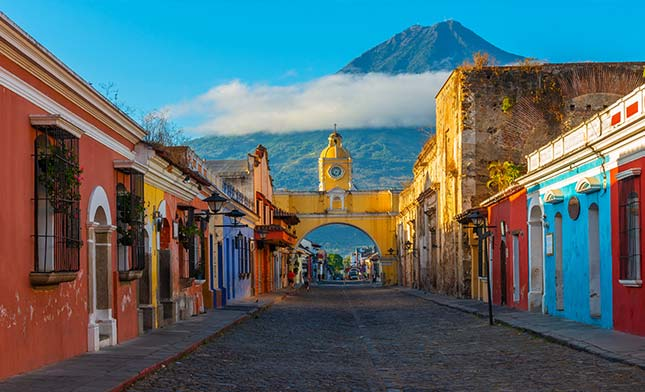

Guatemala is one of the most pro-Israeli countries in Latin America and perhaps in the entire world. This surprising society of Israel has been by our side since the day the state was established, but the true bond of friendship has grown stronger in recent years; It was in 2018 that Guatemala surprised the world when it moved its embassy to Jerusalem, the capital of Israel, a sort of brave act of unequivocal support for the Jewish state.
Guatemala is rich in breathtaking landscapes consisting of powerful volcanoes, dense jungles and natural pools and archeological and historical sites that have been religiously preserved from the days of the Mayan Empire. Tikal, located in the national park that bears its name in the heart of the jungle region of northern Guatemala, is an ancient city from the time of the Mayan Empire that was recognized in 1979 as a UNESCO World Heritage Site. Various animals living throughout the park.
Back to Homepage